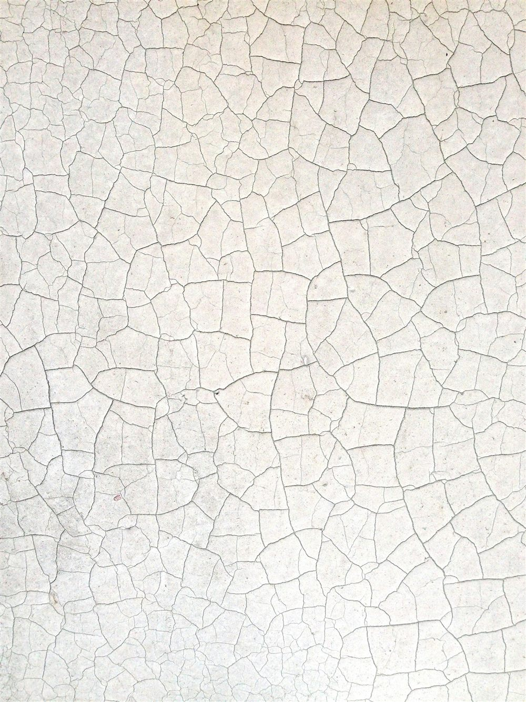

D'où viennent les fissures ?
Une fissure est la manifestation visible d'une tension dans un matériau. Avant de juger de sa gravité, il faut comprendre son origine, car toutes ne traduisent pas un problème de structure. Les causes les plus fréquentes sont :
- Le retrait du béton, du mortier ou de l'enduit en cours de séchage, qui crée de fines fissures superficielles.
- Les variations thermiques et hygrométriques, qui font travailler les matériaux par dilatation et contraction.
- Les mouvements de sol : tassements différentiels, retrait-gonflement des argiles, présence d'eau, qui sollicitent les fondations de manière inégale.
- Une surcharge ou un défaut de conception : élément porteur sous-dimensionné, appui insuffisant, ouverture créée sans renfort.
Une fissure de retrait sur un enduit n'a rien à voir avec une fissure qui traverse un mur porteur à la suite d'un tassement de fondation. C'est précisément cette distinction qui détermine s'il faut agir.
La largeur seule ne dit pas tout. Une fissure fine mais qui s'allonge et s'ouvre dans le temps est plus préoccupante qu'une fissure large mais parfaitement stable depuis des années. L'évolution compte autant que la dimension.
Les fissures sans gravité
La majorité des fissures observées dans l'habitat sont superficielles et n'affectent pas la solidité du bâtiment. On y retrouve typiquement :
- Les microfissures (largeur inférieure à 0,2 mm) : fines lignes en surface d'un enduit ou d'une peinture, souvent dues au retrait.
- Le faïençage : un réseau de fissures très fines en mailles, qui touche le revêtement sans atteindre le support.
- Les fissures de joint entre deux matériaux de nature différente, qui ne travaillent pas de la même façon.
Ces fissures relèvent le plus souvent de l'entretien (rebouchage, reprise d'enduit ou de peinture). Elles méritent toutefois d'être surveillées : une microfissure qui s'élargit change de catégorie.

Les fissures qui doivent alerter
Certaines fissures, en revanche, traduisent un mouvement de la structure ou des fondations. Plusieurs signes doivent attirer l'attention :
- Une largeur supérieure à 2 mm, et a fortiori les lézardes dans lesquelles on peut glisser une pièce de monnaie.
- Une fissure traversante, visible des deux côtés d'un mur.
- Une forme en escalier dans la maçonnerie, qui suit les joints, typique d'un tassement différentiel.
- Une orientation oblique à environ 45°, ou des fissures partant des angles d'ouvertures (portes, fenêtres).
- Une fissure qui évolue : elle s'allonge, s'ouvre ou se ramifie au fil des mois.
La présence d'un seul de ces signes justifie un examen attentif. Le cumul de plusieurs d'entre eux indique presque toujours un désordre structurel à diagnostiquer sans tarder.
Lire une fissure : repères de gravité
Le tableau ci-dessous donne des repères de lecture. Ils restent indicatifs : seule une analyse sur place permet de conclure avec certitude.
| Type de fissure | Aspect | Niveau d'attention |
|---|---|---|
| Microfissure (< 0,2 mm) | Fine ligne en surface, faïençage | Faible — entretien |
| Fissure (0,2 à 2 mm) | Nette, parfois traversante | Modéré — à surveiller |
| Lézarde (> 2 mm) | Large, traversante, en escalier | Élevé — diagnostic recommandé |
| Fissure évolutive | S'ouvre ou s'allonge dans le temps | Élevé — diagnostic sans tarder |
Surveiller l'évolution dans le temps
Face à une fissure douteuse, le premier réflexe utile est de mesurer son évolution. Plusieurs méthodes simples existent : noter et dater la longueur et la largeur, photographier régulièrement avec une règle posée à côté, ou poser des témoins. Un témoin peut être une jauge graduée (fissuromètre) collée de part et d'autre de la fissure, qui mesure son ouverture au fil du temps.
Une fissure stable sur plusieurs mois est rassurante. Une fissure qui continue de travailler appelle l'intervention d'un professionnel pour en déterminer la cause et l'ampleur réelle.
Une fissure n'est pas qu'une question d'esthétique. Au-delà de la solidité, des fissures traversantes laissent passer l'eau et l'air, favorisent les infiltrations et la dégradation des matériaux. Traiter la cause est toujours préférable à reboucher sans comprendre.
Quand faire appel à un bureau d'études
Le recours à un ingénieur structure s'impose dès lors que la fissure présente un signe de gravité, qu'elle évolue, ou qu'un doute subsiste. C'est aussi le cas avant une transaction immobilière, avant des travaux de rénovation ou de surélévation, ou lorsque plusieurs fissures apparaissent simultanément.
Le diagnostic structurel permet d'identifier l'origine du désordre (sol, fondations, structure), d'en évaluer la gravité réelle et de définir, si nécessaire, les travaux de reprise adaptés. Il évite deux écueils courants : s'alarmer pour une fissure bénigne, ou minimiser un désordre qui s'aggrave.
Comment MH Structure vous accompagne
MH Structure réalise des diagnostics structurels partout en France, indépendamment du risque sismique :
- Analyse des fissures et pathologies : origine, gravité, évolution, recommandations.
- Vérification de la structure : descente de charges et contrôle des éléments porteurs selon les Eurocodes.
- Rapport clair et exploitable par vous, votre architecte ou votre entreprise de travaux.
- Préconisations de reprise chiffrées lorsque des travaux sont nécessaires.
Une fissure vous inquiète ? Décrivez-nous la situation, avec quelques photos si possible. Nous vous disons rapidement s'il s'agit d'un désordre à surveiller ou à traiter, et nous intervenons partout en France. Devis gratuit sous 48h.
Photos : Lallaoke, Vincent Burkhead, ThisisEngineering — via Unsplash